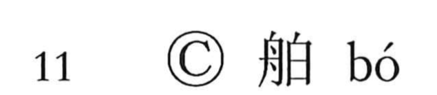

舶

Kun: | On: haku
large ship ・ sea-going vessel ・ foreign ship
Explanation
A phono-semantic character: the boat element (舟) conveys the maritime sense, while 白 serves as the phonetic, indicating the on reading haku. Guang Yun glosses it as “a big ship for the seas,” that is, a large ocean‑going vessel used in maritime traffic. The graph came into use from the Tang period, when overseas trade flourished, and it naturally appears in trade-related compounds such as 船舶 (senpaku, large sea‑going vessels), 舶載 (hakusai, cargo carried by ship), and 舶来 (hakurai, goods brought in by ship from abroad).